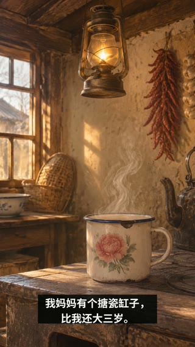

回首页
提示词
第 6 期 · 漫画小故事·花店第二页
清晨开店
2026-11-19
晨光里推开木窗，抱一捧向日葵开门，猫在门口等第一位客人。
雨中送花
2026-11-19
雨下起来了，撑一把油纸伞，把粉玫瑰送到老奶奶手里。
黄昏打烊
2026-11-19
灯笼一盏盏亮起来，抱着薰衣草回头看一眼花屋，猫已经睡着了。
当日其他照片
🔒 当日其他照片已上锁，输入当日日期查看（如 1122）
查看
当日视频
厨房吐司 9 秒
▶ 播放
2026-11-19 · 时长：9.1 秒
雨夜加油站 60 秒
▶ 播放
2026-11-19 · 时长：1 分 0 秒
雨夜加油站 60 秒·原生音频版
▶ 播放
2026-11-19 · 时长：1 分 0 秒

老年故事会第 5 集《妈妈的搪瓷缸子》
▶ 播放
2026-11-19 · 时长：3 分 44 秒
备 注
三张都是水彩漫画风，脸都对上锚图，浅青汉服三张一致；招牌「花屋」清晰无乱码，店内小牌子上有模糊小字，不算乱码；三张一次过，无重拍。
← 上一期
下一期 →